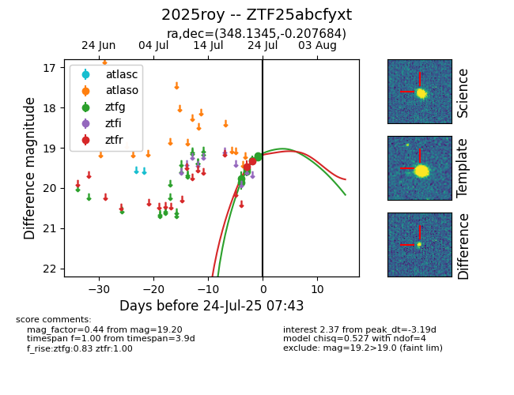

Target ZTF25abcfyxt at 2025-07-24 07:43, see:
FINK: fink-portal.org/ZTF25abcfyxt
Lasair: lasair-ztf.lsst.ac.uk/objects/ZTF25abcfyxt
ALeRCE: alerce.online/object/ZTF25abcfyxt
TNS: wis-tns.org/object/2025roy
YSE: ziggy.ucolick.org/yse/transient_detail/2025roy
alt names
ZTF25abcfyxt (ztf,fink)
2025roy (tns,yse)
coordinates:
equatorial (ra, dec) = (348.1345,-0.20768)
galactic (l, b) = (77.4270,-54.10047)
photometry
last ztfg=19.20, ztfr=19.34
7 ztfg, 2 ztfr detections
